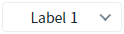
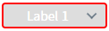

SelectBox의 'disabledClass' 속성을 사용하여 컴포넌트가 'disabled' 상태일 때 적용할 'class'를 설정한 예제입니다.
SelectBox의 disabled Class 적용하기
1
'Toggle "Disabled"' 버튼을 클릭해서 disabled 상태 여부에 따른 css 적용을 비교합니다.
Image 1.[브라우저 실행 예제] - 기본 상태

Image 2.[브라우저 실행 예제] - Disabled 적용 상태

1
STEP 1: CSS 클래스를 작성합니다.
예제에서는 CSS 파일 'css/example.css'에 작성되어 있습니다.
Example 1.CSS
/* SelectBox의 윤곽선, 배경 색상 지정 */ .P00335_toggleClass {border :2px solid red; background-color : #ddd; } /* SelectBOx의 내부 텍스트 컬러 지정 */ .P00335_toggleClass .w2selectbox_label {color : white;}
2
STEP 2: SelectBox의 'disabledClass' 속성에 CSS class를 설정합니다.
[필수] disabledClass = "CSS class 명"
'disabled' 상태일 때 적용할 class를 설정합니다.
예시) disabledClass="P00335_toggleClass"
diselabedClass
getDisabled
setDisabled(boolean)